Sampling Limitation
Conventional net-based sampling can under-sample gelatinous zooplankton (jellyfish), key predators of fish eggs and larvae.
Grant Proposal Visualization
From data to discovery with ocean imaging, AI agents, and humans-in-the-loop for a sustainable ecosystem
Principal Investigators:
Adam Greer (Marine Sciences and Skidaway Institute of OceanographyMarine Science)
Jin Sun (Computer Science and Institute for AI)
University of Georgia, 2026
Wild-caught marine fisheries represent a multi-billion dollar industry and are the main source of protein at least 1 billion people worldwide. Yet the abundance of commercially important fishes, many of which are unable to be farmed or cultured, remains difficult to predict because survival of eggs and larvae is shaped by numerous oceanographic factors. These factors are poorly understood because we typically measure the abundance of larvae, predators, and prey with less spatial detail compared to the ocean conditions (e.g., temperature, salinity, light) influencing larval fish ecology. Imaging represents one approach to match the scales of physical, chemical, and biological observations and make groundbreaking discoveries on how the ocean influences fish populations. The promise of imaging is hindered by the challenges associated with extracting meaningful ecological information from these large and complex datasets.
This proposal, in partnership with Google AI, provides a solution to this persistent problem in fisheries and ecosystem management. Can improved resolution of the environment that larval fishes experience lead to mechanistic understanding of population changes? This work leverage hundreds of TB of existing data and novel field experiments to discovery the key factors influencing larval fishes and develop useful indicators for ecosystem-based managements and fish population status. Accurate monitoring of ecosystem health (by including more factors and different scales of observation) will lead to better predictions relevant to fisheries. This would be a major breakthrough for food security, ecosystem restoration, and scientific understanding of the mechanisms influencing fish populations.
Conventional net-based sampling can under-sample gelatinous zooplankton (jellyfish), key predators of fish eggs and larvae.
Predator-prey interactions and prey patchiness across meters to tens of meters are difficult to quantify with existing workflows.
Measuring and interpreting these indicators could improve prediction of larval fish survival and fish population variability.

Camera systems quantify larval fishes, predators, prey, and marine snow at relevant spatial scales.
A curated benchmark dataset trains the agent to identify larval fishes and diverse zooplankton taxa.
The system captures biologically relevant interactions and flags unfamiliar objects to improve training.
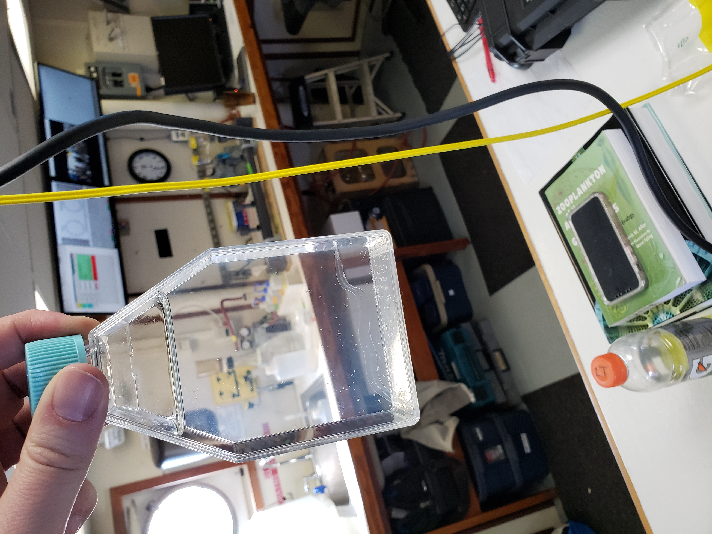

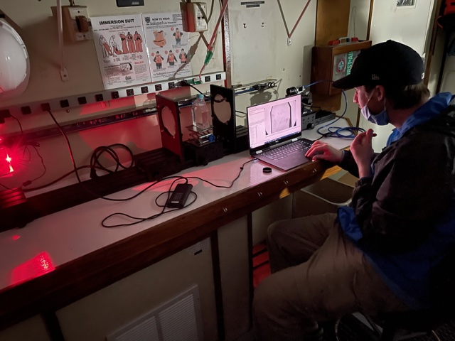
Examples of representative larval fish species from the Gulf of Mexico:
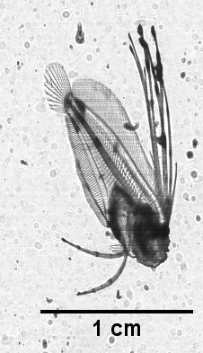
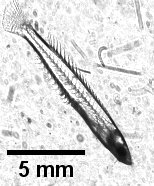
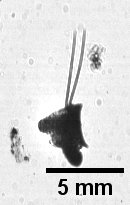
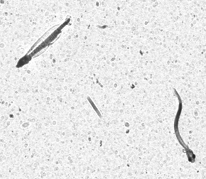
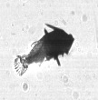
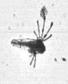
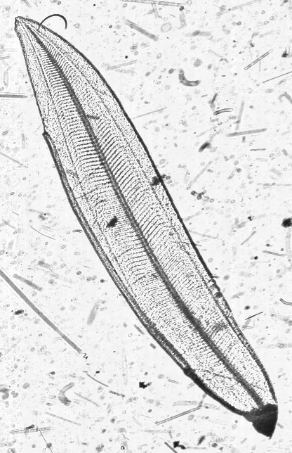
Step 1
Train the agent with benchmark images to identify zooplankton and larval fishes across environments.
Step 2
Run the AI agent on the moored imaging system with onboard power and local compute.
Step 3
Tow an imaging system near the moored device for spatial context and performance benchmarking.
Step 4
Release the AI agent as open-source software for marine scientists worldwide.
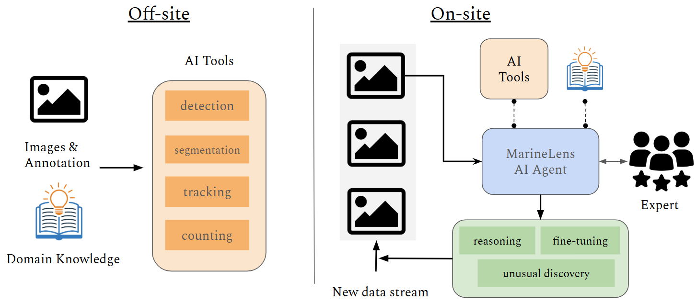
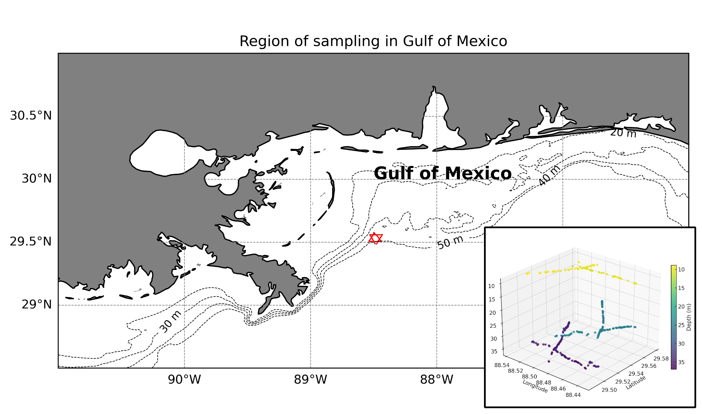
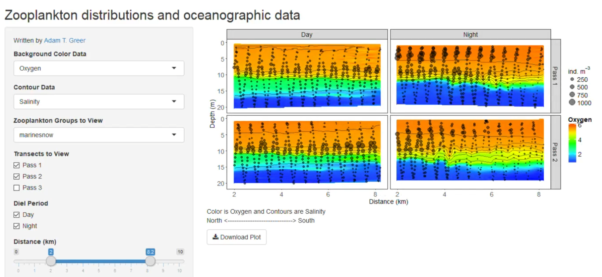
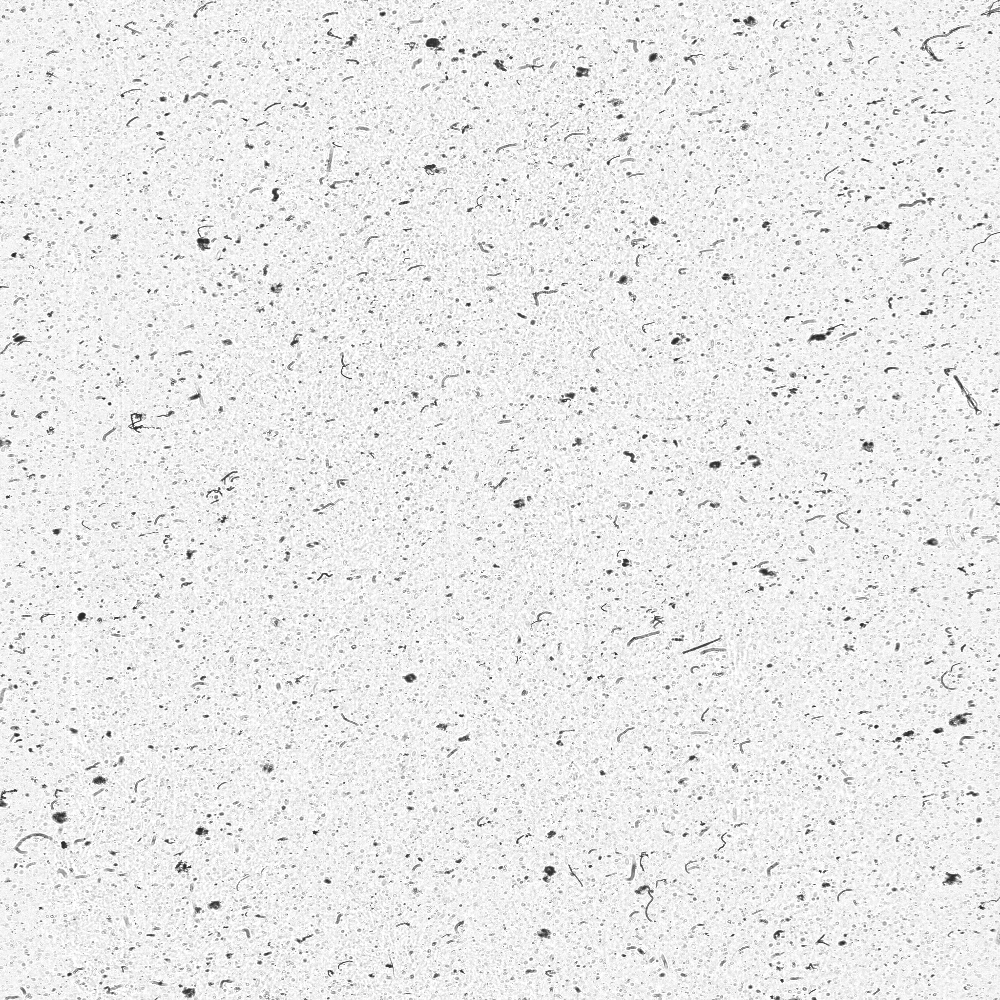
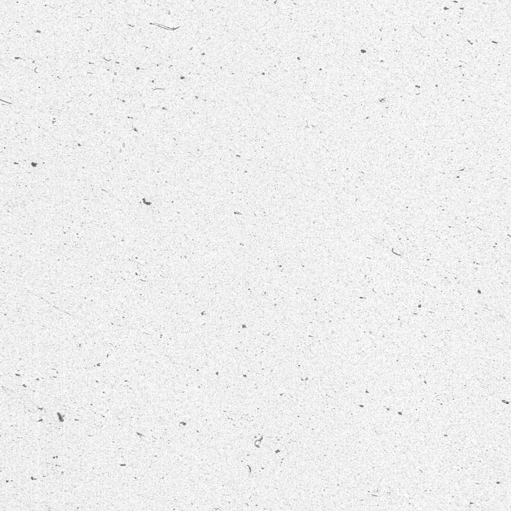
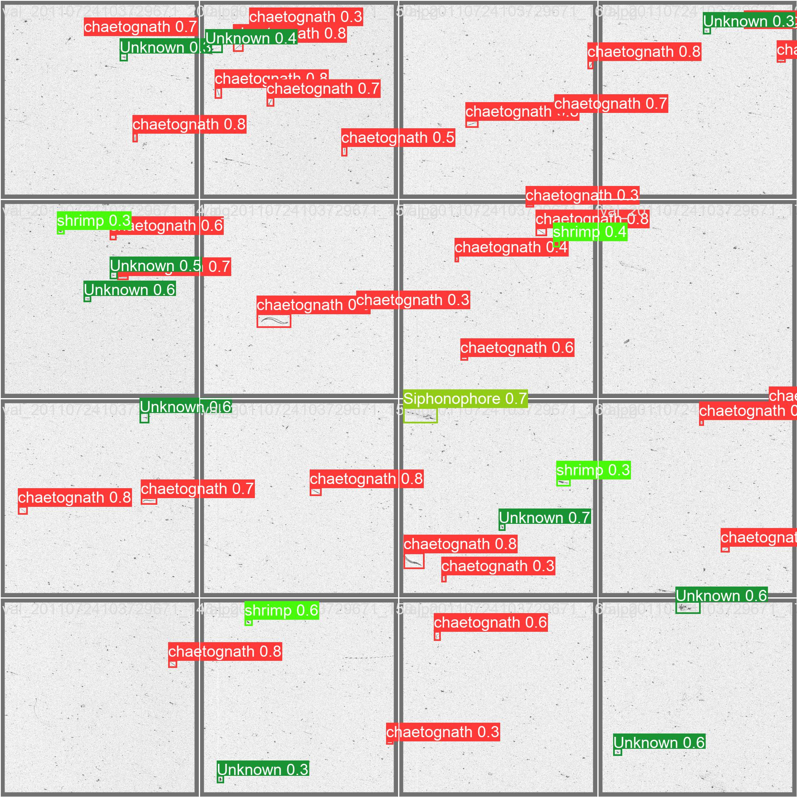
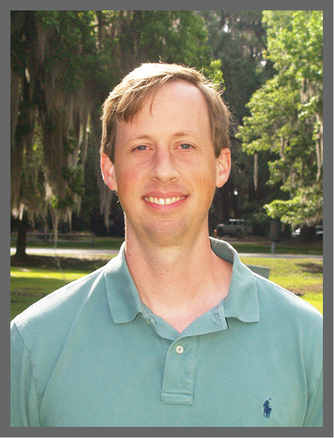
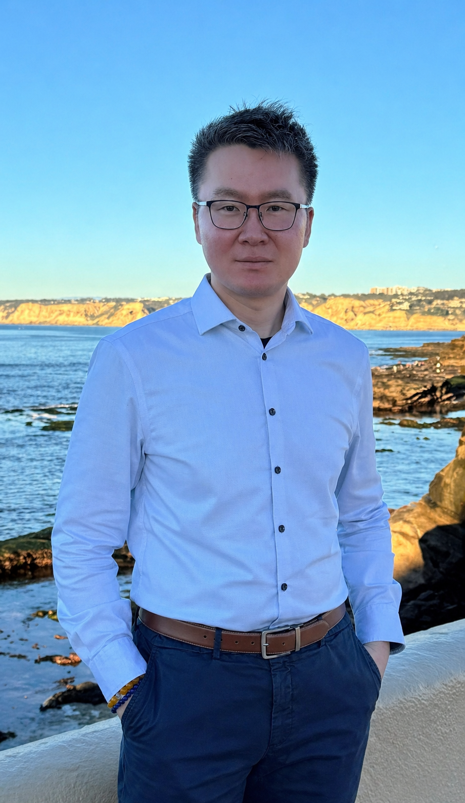
The proposed AI-agent imaging framework can provide near-real-time ecosystem health information that supports local fisheries monitoring, adaptive sampling decisions, and earlier detection of ecological shifts.
By combining moored deployment with mobile tow-body context, the project demonstrates an operational template that can be transferred to diverse marine environments beyond the initial Gulf of Mexico and coral reef test sites.
Improves ecosystem-aware fisheries assessments with higher-frequency biological indicators.
Modular hardware plus onboard AI supports replication across regions and partner institutions.
Open-source release enables community improvement and creation of new ecosystem indicators.